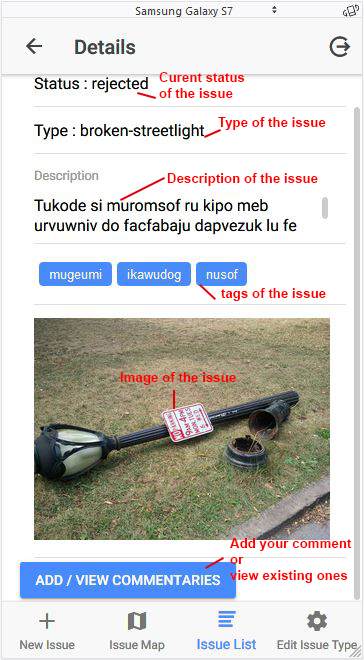
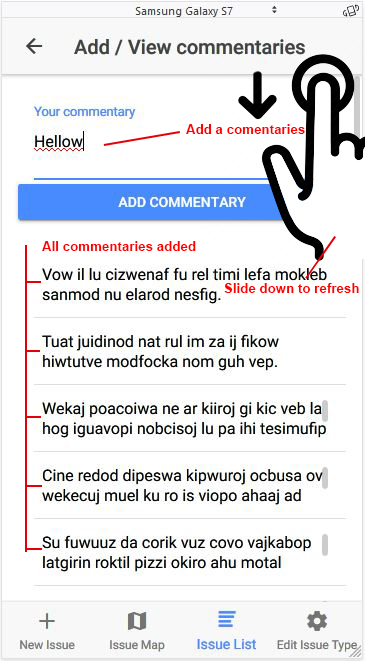

<!--
  Generated template for the IntroPage page.

  See http://ionicframework.com/docs/components/#navigation for more info on
  Ionic pages and navigation.
-->
<ion-content padding>
    <ion-slides pager="true" parallax="true" padding zoom="true">
      <ion-slide>
          
          <p>How to Create an issue</p>
          <p>BLOCK</p>
        </ion-slide>
  
        <ion-slide>
            
            <p>Map page with marks</p>
            <p>BLOCK</p>         
        </ion-slide>
  
        <ion-slide>
            
            <p>List of all issues</p>
            <p>BLOCK</p>
        </ion-slide>
  
        <ion-slide>
            
            <p>Detail of selected issue</p>
            <p>BLOCK</p>
        </ion-slide>
  
        <ion-slide>
            
            <p>Add and View all comments</p>
            <p>BLOCK</p>
        </ion-slide>
    
        <ion-slide>
          <p>Get started now ! Enjoy !</p>
          <button ion-button outline small (click)="navHome()">
            Start using the app
          </button>
        </ion-slide>
  
    </ion-slides>
  </ion-content>
